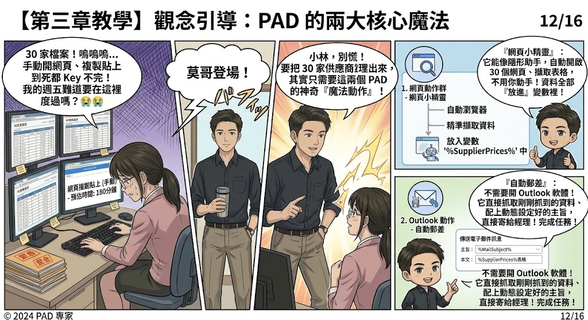
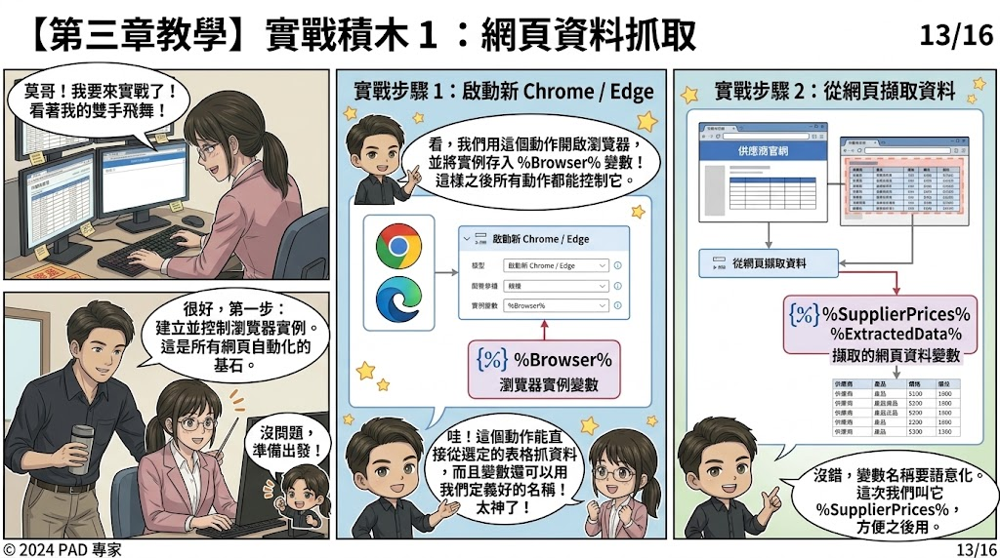
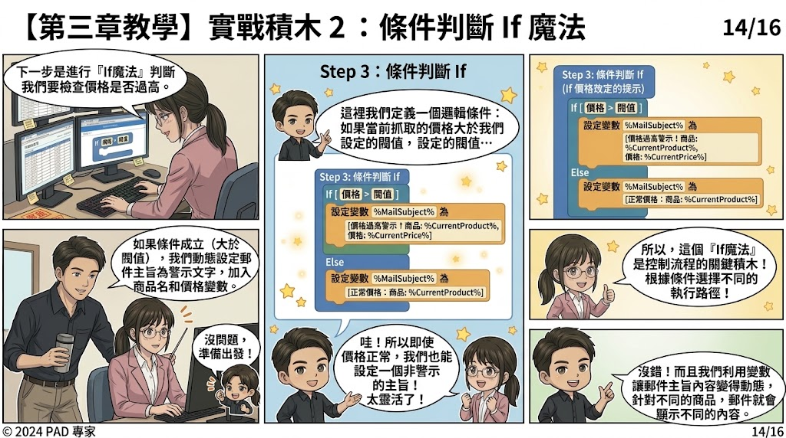

Author: Troy Su | Power Automate Desktop (PAD) & RPA Automation Expert
Just after mastering Excel automation in Chapter 2, a new workplace crisis strikes! At 1:00 PM, the sales manager bursts in with another sudden task: "Xiaolin! Urgent assignment from sales: scrape the latest price lists from all 30 supplier websites and compile them into a master report before 2:00 PM! Real urgent!"
30 websites, manual browsing, copying and pasting would take at least 180 minutes! Xiaolin is once again on the verge of despair. But Brother Mo steps in with a smile: "Don't panic, Xiaolin. Let our software robots handle this small task. That's the real power of PAD!"

Core Concepts: The Two Secret Weapons of Web & Email Automation
Instead of manually opening browser tabs one by one, PAD provides two specialized action groups that work seamlessly together:
1. Web Elf (Browser Automation) — The Invisible Data Harvester
Like an invisible assistant, PAD can automatically launch Chrome or Edge, navigate through 30 supplier URLs, accurately scrape target price tables, and store all structured data directly into variable %SupplierPrices% (or %ExtractedData%) without touching your mouse!
2. Auto Postman (Outlook Actions) — Headless Email Dispatcher
No need to open the Outlook app and type manually! PAD connects directly to the email backend. It takes the freshly extracted price table, pairs it with dynamically generated subject lines %MailSubject%, and dispatches the alert email straight to your manager.


Step-by-Step Tutorial: Building the End-to-End Automation Flow
- Launch Browser Instance: Use
Launch new Chrome / Edge. This creates a browser instance variable%Browser%, allowing all subsequent actions to control the web page precisely. - Extract Data from Web Page: Add
Extract data from web page. Select the target price table visually, and rename the output variable to%SupplierPrices%for clean readability. - If Condition Gatekeeper: Add an
If [ Price > Threshold ]logic block.- If True (Price too high): Set
%MailSubject%to[High Price Alert! Item: %CurrentProduct%, Price: %CurrentPrice%]. - Else (Normal price): Set
%MailSubject%to[Normal Price: Item: %CurrentProduct%].
- If True (Price too high): Set
Assembling the Flow: Automated Dispatch & Resource Cleanup
After checking prices with the If condition, add Send email message through Outlook:
- To: Manager's Email
- Subject:
%MailSubject% - Body:
%ExtractedData%(HTML table or summary)
Finally, add Close web browser to release system resources. Wrap everything inside a For each loop across all 30 supplier URLs, and click Run!
Victory: 100% Accuracy and On-Time Dismissal!
In less than 5 minutes, 30 supplier websites were scraped and all alert emails were dispatched seamlessly! The manager checked the report and praised Xiaolin's amazing efficiency. Xiaolin and Brother Mo walked out of the office on time with coffee in hand.